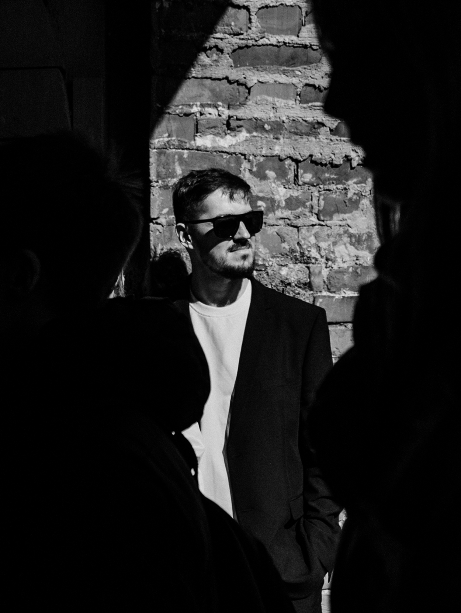

Проектирую выразительный линейный саунд-дизайн и интерактивные аудиосистемы: от синтеза и фоли в REAPER до интеграции в Wwise, FMOD и Unity.

Мой бэкграунд помогает считывать художественную атмосферу кадра и переводить её в точный, тактильный звук, который усиливает геймплей и сохраняет чистоту микса. Веду полный цикл работы над игровым аудио: от полевых записей и синтеза до настройки логики, RTPC, пространственной акустики и интеграции в движок.
Видео-кейсы с фильтрацией по статусу (оригинал или редизайн), аудиодвижку и игровому движку.
По выбранным тегам проектов не найдено.